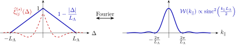

Section 5 • \(P\)3D
5.2 Relation to the per-sample 3D 2PCF
Inserting Eq. (5.1) into Eq. (5.2), \begin{align} \widehat{P}_{ij}^{(s)}\!\left(\vec{k}_{\perp},k_\parallel\right) &= \frac{1}{|\mathcal{A}_\perp|\,L_\Lambda} \int_{\mathcal{A}_\perp}\! d^2x_{\perp\alpha}\!\int\! d\Lambda_\alpha \int_{\mathcal{A}_\perp}\! d^2x_{\perp\beta}\!\int\! d\Lambda_\beta \notag\\ &\qquad\times e^{+i\left[\vec{k}_\perp\cdot\left(\vec{x}_{\perp\beta}-\vec{x}_{\perp\alpha}\right)+k_\parallel\left(\Lambda_\beta-\Lambda_\alpha\right)\right]}\, \delta_i^{(s)}\!\left(\vec{x}_{\perp\alpha},\Lambda_\alpha\right)\, \delta_j^{(s)}\!\left(\vec{x}_{\perp\beta},\Lambda_\beta\right). \notag \end{align} With the change of variables \((\vec{x}_\perp,\Lambda)=(\vec{x}_{\perp\alpha},\Lambda_\alpha)\), \((\vec{r}_\perp,\Delta)=(\vec{x}_{\perp\beta}-\vec{x}_{\perp\alpha},\Lambda_\beta-\Lambda_\alpha)\) (unit Jacobian), the condition that the second point lies in the domain becomes the window \(W_{\vec{r}_\perp,\Delta}\), and the integral over \((\vec{x}_\perp,\Lambda)\) at fixed lag is the numerator of Eq. (4.2), i.e. \(|\mathcal{A}_\perp(\vec{r}_\perp)|\,(L_\Lambda-|\Delta|)\,\widehat{\xi}_{ij}^{(s)}(\vec{r}_\perp,\Delta)\). Hence the exact relation \begin{align} \widehat{P}_{ij}^{(s)}\!\left(\vec{k}_{\perp},k_\parallel\right) &= \int\! d^2r_\perp \int_{-L_\Lambda}^{L_\Lambda}\! d\Delta\; \overline{W}\!\left(\vec{r}_\perp,\Delta\right)\, \widehat{\xi}_{ij}^{(s)}\!\left(\vec{r}_{\perp},\Delta\right)\, e^{+i\left(\vec{k}_\perp\cdot\vec{r}_\perp+k_\parallel\Delta\right)}, \notag\\ \overline{W}\!\left(\vec{r}_\perp,\Delta\right) &\equiv \frac{|\mathcal{A}_\perp(\vec{r}_\perp)|}{|\mathcal{A}_\perp|} \left(1-\frac{|\Delta|}{L_\Lambda}\right), \tag{5.4} \end{align} where the transverse integral runs over all the separations with \(|\mathcal{A}_\perp(\vec{r}_\perp)|>0\). \(\overline{W}\) is the fraction of the domain that contributes pairs at lag \((\vec{r}_\perp,\Delta)\) (\(\overline{W}(\vec{0},0)=1\)), the 3D generalization of the triangular factor of the 1D case: the periodogram is the Fourier transform of the per-sample 2PCF tapered by the pair-counting window (Fig. 10).

For a periodic transverse domain (with \(\vec{k}_\perp\) on the discrete grid of the domain) the transverse factor is one, and only when edge effects are negligible, \(\overline{W}\simeq1\) over the lags where \(\widehat{\xi}_{ij}^{(s)}\) is non-negligible, does Eq. (5.4) reduce to a plain Fourier transform.